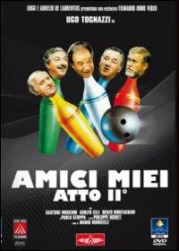

45:19 · 11 OPERE
Mente e coscienza: un excursus.
Il filo del discorso
Il percorso va dalle abitudini osservate nei luoghi pubblici alla domanda sulla responsabilità personale. Il relatore confronta immagini girate in New Jersey e a New York e le interpreta come effetti di diverse pressioni politiche. Da qui nasce una polemica contro la comunicazione mediatica e contro la distanza di chi giudica senza sentirsi coinvolto. Il commento a un monologo di Crozza introduce il tema della satira e delle figure rese riconoscibili dalla industria culturale.
Leggi la sintesi completaRiduci la sintesi
Il falso comunicato sul caso Moro diventa poi un esempio della necessità di indagare le fonti, mentre la storia del bibliofilo propone una alternativa alla notorietà: cercare idee anche in autori poco conosciuti. Pascal, Platone e il rapporto fra ragione tecnica e riflessione preparano la lettura conclusiva di Thoreau. Mente e coscienza sono, nella proposta del relatore, facoltà da esercitare insieme per non delegare interamente il proprio giudizio. La scheda distingue questa tesi dalle accuse personali, dalle interpretazioni sanitarie e dalle analogie storiche non dimostrate dal parlato.
I libri nel discorso

Amici miei – Atto II°
Identificazione probabile
Note sul riferimento
Copertina della edizione DVD Filmauro: Film italiano, Filmauro, 1982, regia di Mario Monicelli. Immagine della edizione DVD Filmauro Special Edition, distribuzione Terminal Video, uscita 22 novembre 2011, EAN 8016024042492. Non è una copertina libraria né il manifesto cinematografico del 1982.
Copertina autentica del DVD del secondo film, ispezionata per intero: titolo Atto II, marchi Filmauro e DVD. Il collegamento alla scena ricordata resta probabile.
Titolo generico Amici miei e scena della alluvione con Sassaroli: collegamento probabile al secondo film, non al primo per semplice coincidenza di titolo.

Eclisse della ragione. Critica della ragione strumentale
Identificazione probabile
Note sul riferimento
Copertina: Einaudi, Biblioteca Einaudi, 2000, traduzione di Elena Vaccari Spagnol, ISBN 9788806154370. Il titolo è anche catalogato con la variante Eclissi; la copertina acquisita reca Eclisse. Originale inglese Eclipse of Reason, 1947.
Copertina autentica Einaudi bianca con fascia blu, autore, titolo e sottotitolo leggibili. Non è la copertina del diverso Crepuscolo. Il collegamento all’editore Bloomsbury verifica l’opera originale, mentre la copertina italiana proviene da IBS.
Horkheimer e ragione strumentale, titolo non pronunciato: collegamento probabile all’opera.

Beffe e beffatori in nome di una crisi
Note sul riferimento
Copertina: Lulu, 2021
Titolo del libro del relatore esplicito, con richiamo alla propria analisi di potere e crisi.

Pensieri
Identificazione probabile
Note sul riferimento
Copertina: UTET · a cura di Bruno Nacci · 2021
Copertina autentica dell’edizione di riferimento, non attribuita all’esemplare del video.
Pascal e Le moi est haïssable: probabile riferimento ai Pensieri, titolo non pronunciato.

La Repubblica
Identificazione probabile
Note sul riferimento
Copertina: Laterza · La Repubblica · edizione con testo a fronte di riferimento
Immagine associata all’ISBN di riferimento e controllata visivamente; edizione e traduzione non identificate come quelle citate o lette nel video.
Tiranno e desiderio: probabile collegamento ai libri VIII–IX della Repubblica, senza edizione o citazione letterale certa.

La società aperta e i suoi nemici
Note sul riferimento
Copertina: Armando Editore · Classici · 2018 · volume unico
Copertina autentica di riferimento, controllata visivamente. L’edizione non è identificata come quella usata nel video.
Popper, società aperta e Platone nemico: riconoscibile richiamo al libro, non identificazione di una edizione.

La ballata delle madri
Note sul riferimento
Copertina della raccolta: Garzanti · 2001
La ballata delle madri è contenuta in Poesia in forma di rosa. L’immagine mostra la raccolta Garzanti del 2001, con prefazione di Edoardo Esposito, non un volume autonomo della poesia né l’edizione del video.
La ballata delle madri e Pasolini espliciti: riferimento alla poesia.

Psicologia delle folle
Identificazione probabile
Note sul riferimento
Copertina: Apogeo · 2025 · nuova traduzione dell’edizione integrale originale
Immagine autentica dell’opera, controllata visivamente; l’edizione di riferimento non è attribuita al filmato.
Le Bon e il problema delle masse, senza titolo: collegamento probabile allo studio già presente; nessuna nuova voce duplicata.

Psicologia delle masse e analisi dell’Io
Identificazione probabile
Note sul riferimento
Copertina: Einaudi, 2013
Freud come continuatore della analisi delle masse, titolo non pronunciato: identificazione probabile.

Disobbedienza civile (Civil Disobedience / Resistance to Civil Government)
Note sul riferimento
Copertina: Feltrinelli, Universale Economica I Classici, 25 maggio 2017, 96 pagine, traduzione di Laura Gentili, cura di Franco Meli, ISBN 9788807902635. Il volume comprende anche In difesa del capitano John Brown, non citato autonomamente nel video. Saggio originario del 1849; immagine della edizione italiana di riferimento, non della copia letta.
Immagine autentica dell’opera, controllata visivamente; l’edizione di riferimento non è attribuita al filmato.
Saggio e autore espliciti, poi lettura di passaggi sul governo migliore, coscienza e corporation.

Pentagon Papers (Report of the Office of the Secretary of Defense Vietnam Task Force)
Note sul riferimento
Prima pagina del fascicolo introduttivo e indice: Rapporto finale del 1969 · fascicolo introduttivo e indice · scansione NARA declassificata nel 2011
Prima pagina del fascicolo introduttivo e indice conservato dai National Archives; non è la copertina di un libro e non riproduce l’intero rapporto. La voce riguarda il corpus documentario.
Pentagon Papers nominati esplicitamente come caso di documenti e comunicazione pubblica.